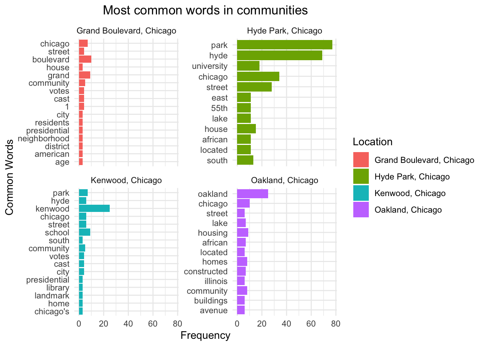

# Read in Wikipedia webpage as an R object
url <- "https://en.wikipedia.org/wiki/Grand_Boulevard,_Chicago"
webpage <- read_html(url)
# Extract tables from the webpage as data frames
tables <- html_table(webpage)
str(tables)
tablesAssignment 3
Due at 11:59pm on October 24.
Github link: https://github.com/ZuorW/SURV727.git
Web Scraping
In this assignment, your task is to scrape some information from Wikipedia. We start with the following page about Grand Boulevard, a Chicago Community Area.
https://en.wikipedia.org/wiki/Grand_Boulevard,_Chicago
The ultimate goal is to gather the table “Historical population” and convert it to a data.frame.
As a first step, read in the html page as an R object. Extract the tables from this object (using the rvest package) and save the result as a new object. Follow the instructions if there is an error. Use str() on this new object -- it should be a list. Try to find the position of the “Historical population” in this list since we need it in the next step.
Extract the “Historical population” table from the list and save it as another object. You can use subsetting via [[…]] to extract pieces from a list. Print the result.
# Extract second table only and name as pop
pop <- tables[[2]]
pop# A tibble: 11 × 4
Census Pop. .mw-parser-output .sr-only{border:0;clip:rect(0,0,0,0)…¹ `%±`
<chr> <chr> <chr> <chr>
1 1930 87,005 "" —
2 1940 103,256 "" 18.7%
3 1950 114,557 "" 10.9%
4 1960 80,036 "" −30.…
5 1970 80,166 "" 0.2%
6 1980 53,741 "" −33.…
7 1990 35,897 "" −33.…
8 2000 28,006 "" −22.…
9 2010 21,929 "" −21.…
10 2020 24,589 "" 12.1%
11 [3][1] [3][1] "[3][1]" [3][…
# ℹ abbreviated name:
# ¹`.mw-parser-output .sr-only{border:0;clip:rect(0,0,0,0);clip-path:polygon(0px 0px,0px 0px,0px 0px);height:1px;margin:-1px;overflow:hidden;padding:0;position:absolute;width:1px;white-space:nowrap}Note`You will see that the table needs some additional formatting. We only want rows and columns with actual values (I called the table object pop).
# Remove first row and third empty column to clean pop
pop <- pop[,-3]
pop <- pop[-11,]
pop# A tibble: 10 × 3
Census Pop. `%±`
<chr> <chr> <chr>
1 1930 87,005 —
2 1940 103,256 18.7%
3 1950 114,557 10.9%
4 1960 80,036 −30.1%
5 1970 80,166 0.2%
6 1980 53,741 −33.0%
7 1990 35,897 −33.2%
8 2000 28,006 −22.0%
9 2010 21,929 −21.7%
10 2020 24,589 12.1% Expanding to More Pages
That’s it for this page. However, we may want to repeat this process for other community areas. The Wikipedia page https://en.wikipedia.org/wiki/Grand_Boulevard,_Chicago has a section on “Places adjacent to Grand Boulevard, Chicago” at the bottom. Can you find the corresponding table in the list of tables that you created earlier? Extract this table as a new object.
# Extract fourth table and name as pop2
pop2 <- tables[[4]]
pop2# A tibble: 5 × 3
X1 X2 X3
<chr> <chr> <chr>
1 "Armour Square, Chicago" "Douglas, Chicago" "Oakland, Chicago"
2 "" "" ""
3 "Fuller Park, Chicago" "Grand Boulevard, Chicago" "Kenwood, Chicago"
4 "" "" ""
5 "" "Washington Park, Chicago" "Hyde Park, Chicago"Then, grab the community areas east of Grand Boulevard and save them as a character vector. Print the result
# Take community names column 3 and save as a character vector
east <- as.character(pop2$X3)
east <- east[-2] #remove blank vectors
east <- east[-3]
east[1] "Oakland, Chicago" "Kenwood, Chicago" "Hyde Park, Chicago"We want to use this list to create a loop that extracts the population tables from the Wikipedia pages of these places. To make this work and build valid urls, we need to replace empty spaces in the character vector with underscores. This can be done with gsub(), or by hand. The resulting vector should look like this: “Oakland,_Chicago” “Kenwood,_Chicago” “Hyde_Park,_Chicago”
# Clean up communities variable
east <- gsub(" ", "_", east) #change space to underscore
east[1] "Oakland,_Chicago" "Kenwood,_Chicago" "Hyde_Park,_Chicago"To prepare the loop, we also want to copy our pop table and rename it as pops. In the loop, we append this table by adding columns from the other community areas.
pops <- popBuild a small loop to test whether you can build valid urls using the vector of places and pasting each element of it after https://en.wikipedia.org/wiki/ in a for loop. Calling url shows the last url of this loop, which should be https://en.wikipedia.org/wiki/Hyde_Park,_Chicago.
for(i in east) {
url <- paste0("https://en.wikipedia.org/wiki/", i, sep = "")
src <- read_html(url)
print(url)
}[1] "https://en.wikipedia.org/wiki/Oakland,_Chicago"
[1] "https://en.wikipedia.org/wiki/Kenwood,_Chicago"
[1] "https://en.wikipedia.org/wiki/Hyde_Park,_Chicago"url[1] "https://en.wikipedia.org/wiki/Hyde_Park,_Chicago"Finally, extend the loop and add the code that is needed to grab the population tables from each page. Add columns to the original table pops using cbind().
pops$Location <- c("Grand Boulevard, Chicago")
for(i in east) {
url <- paste0("https://en.wikipedia.org/wiki/", i, sep = "")
src <- read_html(url)
print(url)
nds <- html_nodes(src, xpath = '//*[contains(concat( " ", @class, " " ), concat( " ", "us-census-pop-right", " " ))]//th | //*[contains(concat( " ", @class, " " ), concat( " ", "us-census-pop-right", " " ))]//td')
stats <- html_text(nds)
stats <- stats[-45]
header <- stats[1:4]
stats <- stats[-(1:4)]
stats_matrix <- matrix(stats, ncol = 4, byrow = TRUE)
stats_df <- as.data.frame(stats_matrix)
stats_df <- stats_df[-3]
colnames(stats_df) <- header[-3]
stats_df$Location <- gsub("_", " ", i)
pops <- cbind(pops, stats_df)
}[1] "https://en.wikipedia.org/wiki/Oakland,_Chicago"
[1] "https://en.wikipedia.org/wiki/Kenwood,_Chicago"
[1] "https://en.wikipedia.org/wiki/Hyde_Park,_Chicago"pops Census Pop. %± Location Census Pop. %±
1 1930 87,005 — Grand Boulevard, Chicago 1930 14,962 —
2 1940 103,256 18.7% Grand Boulevard, Chicago 1940 14,500 −3.1%
3 1950 114,557 10.9% Grand Boulevard, Chicago 1950 24,464 68.7%
4 1960 80,036 −30.1% Grand Boulevard, Chicago 1960 24,378 −0.4%
5 1970 80,166 0.2% Grand Boulevard, Chicago 1970 18,291 −25.0%
6 1980 53,741 −33.0% Grand Boulevard, Chicago 1980 16,748 −8.4%
7 1990 35,897 −33.2% Grand Boulevard, Chicago 1990 8,197 −51.1%
8 2000 28,006 −22.0% Grand Boulevard, Chicago 2000 6,110 −25.5%
9 2010 21,929 −21.7% Grand Boulevard, Chicago 2010 5,918 −3.1%
10 2020 24,589 12.1% Grand Boulevard, Chicago 2020 6,799 14.9%
Location Census Pop. %± Location Census Pop. %±
1 Oakland, Chicago 1930 26,942 — Kenwood, Chicago 1930 48,017 —
2 Oakland, Chicago 1940 29,611 9.9% Kenwood, Chicago 1940 50,550 5.3%
3 Oakland, Chicago 1950 35,705 20.6% Kenwood, Chicago 1950 55,206 9.2%
4 Oakland, Chicago 1960 41,533 16.3% Kenwood, Chicago 1960 45,577 −17.4%
5 Oakland, Chicago 1970 26,890 −35.3% Kenwood, Chicago 1970 33,531 −26.4%
6 Oakland, Chicago 1980 21,974 −18.3% Kenwood, Chicago 1980 31,198 −7.0%
7 Oakland, Chicago 1990 18,178 −17.3% Kenwood, Chicago 1990 28,630 −8.2%
8 Oakland, Chicago 2000 18,363 1.0% Kenwood, Chicago 2000 29,920 4.5%
9 Oakland, Chicago 2010 17,841 −2.8% Kenwood, Chicago 2010 25,681 −14.2%
10 Oakland, Chicago 2020 19,116 7.1% Kenwood, Chicago 2020 29,456 14.7%
Location
1 Hyde Park, Chicago
2 Hyde Park, Chicago
3 Hyde Park, Chicago
4 Hyde Park, Chicago
5 Hyde Park, Chicago
6 Hyde Park, Chicago
7 Hyde Park, Chicago
8 Hyde Park, Chicago
9 Hyde Park, Chicago
10 Hyde Park, ChicagoScraping and Analyzing Text Data
Suppose we wanted to take the actual text from the Wikipedia pages instead of just the information in the table. Our goal in this section is to extract the text from the body of the pages, then do some basic text cleaning and analysis.
First, scrape just the text without any of the information in the margins or headers. For example, for “Grand Boulevard”, the text should start with, “Grand Boulevard on the South Side of Chicago, Illinois, is one of the …”. Make sure all of the text is in one block by using something like the code below (I called my object description).
# description <- description %>% paste(collapse = ' ')
url <- "https://en.wikipedia.org/wiki/Grand_Boulevard,_Chicago"
page <- read_html(url)
main_content <- page %>%
html_nodes(".mw-parser-output p") %>%
html_text2()
description <- main_content %>% paste(collapse = ' ')
grand_descrip <- data.frame(Location = "Grand Boulevard, Chicago", Description = description)
grand_descrip Location
1 Grand Boulevard, Chicago
Description
1 Grand Boulevard on the South Side of Chicago, Illinois, is one of the city's Community Areas. The boulevard from which it takes its name is now Martin Luther King Jr. Drive. The area is bounded by 39th to the north, 51st Street to the south, Cottage Grove Avenue to the east, and the Chicago, Rock Island & Pacific Railroad tracks to the west. This is one of the two community areas that encompass the Bronzeville neighborhood, with the other being Douglas. Grand Boulevard also includes the Washington Park Court District neighborhood that was declared a Chicago Landmark on October 2, 1991.[2] The Harold Washington Cultural Center is one of its newer and more famous buildings. It arose on the site that from the 1920s through the 1970s housed a famous center of African American cultural life, the Regal Theater. Among the other notable properties in this neighborhood are the Daniel Hale Williams House, the Robert S. Abbott House, and the Oscar Stanton De Priest House. According to a 2018 US Census American Community Survey, there were 22,784 people and 10,383 households in Grand Boulevard.[1] The racial makeup of the area was 92.56% African American, 2.70% White, 0.70% Asian, and 2.26% from other races. Hispanic or Latino residents of any race were 1.77% of the population.[1] In the area, the population was spread out, with 27.3% under the age of 19, 19.4% from 20 to 34, 22.6% from 35 to 49, 16.4% from 50 to 64, and 14.3% who were 65 years of age or older. The median age was 36.9 years.[1] Grand Boulevard is part of City of Chicago School District #299 and City Colleges of Chicago District #508. The nearest City Colleges campus was Kennedy–King College in Englewood. A high school diploma had been earned by 85.5% of Grand Boulevard residents and a bachelor's degree or greater had been earned by 31.31% of residents compared to citywide figures of 82.3% and 35.6% respectively.[1] The Chicago Transit Authority operates the Chicago "L" system in the Grand Boulevard community area. The Green Line provides rapid transit at four stations: Indiana, 43rd Street, 47th Street and 51st Street stations. The Grand Boulevard community area has supported the Democratic Party in the past two presidential elections by overwhelming margins. In the 2016 presidential election, Grand Boulevard cast 10,081 votes for Hillary Clinton and cast 171 votes for Donald Trump.[4] In the 2012 presidential election, Grand Boulevard cast 10,646 votes for Barack Obama and cast 81 votes for Mitt Romney.[5]Using a similar loop as in the last section, grab the descriptions of the various communities areas. Make a tibble with two columns: the name of the location and the text describing the location.
library(tidytext)
location_descriptions <- tibble()
for (i in east)
{
url <- paste0("https://en.wikipedia.org/wiki/", i)
src <- read_html(url)
main_content <- src %>%
html_nodes(".mw-parser-output p") %>%
html_text2()
desci <- main_content %>% paste(collapse = ' ')
place_cleaned <- gsub("_", " ", i)
location_descriptions <- rbind(location_descriptions, tibble(Location = place_cleaned, Description = desci))
}
location_descriptions <- rbind(grand_descrip, location_descriptions)Let’s clean the data using tidytext. If you have trouble with this section, see the example shown in https://www.tidytextmining.com/tidytext.html
Create tokens using unnest_tokens. Make sure the data is in one-token-per-row format. Remove any stop words within the data. What are the most common words used overall?
text <- c()
for(i in east) {
url <- paste0("https://en.wikipedia.org/wiki/", i)
main_text <- read_html(url) %>%
html_nodes(".mw-parser-output p") %>%
html_text(trim = TRUE) # get the main text
# Add the text to the all_text character vector
all_text <- c(text, main_text)
}
data("stop_words") # load the common stopwords
text_df <- data.frame()
for (i in 1:nrow(location_descriptions)) {
description <- location_descriptions$Description[i]
text <- data.frame(Description = description) %>%
unnest_tokens(word, Description) %>% # Tokenize the text data
anti_join(stop_words) # Remove stop words
text$Location <- location_descriptions$Location[i]
text_df <- bind_rows(text_df, text)
}
# Count the most common words
text_count <- text_df %>%
count(Location, word, sort = TRUE)
head(text_count) Location word n
1 Hyde Park, Chicago park 77
2 Hyde Park, Chicago hyde 69
3 Hyde Park, Chicago chicago 34
4 Hyde Park, Chicago street 28
5 Kenwood, Chicago kenwood 25
6 Oakland, Chicago oakland 25- The top three common words used are: “park”, “hyde”, and “chicago”.
Plot the most common words within each location. What are some of the similarities between the locations? What are some of the differences?
library(ggplot2)
top <- 12 # here we want to plot the top 12 popular words within each location
# Get top 12 words for each location
top_words <- text_count %>%
group_by(Location) %>%
slice_max(n, n = top) # Get top 12 words for each location
top_words# A tibble: 57 × 3
# Groups: Location [4]
Location word n
<chr> <chr> <int>
1 Grand Boulevard, Chicago boulevard 10
2 Grand Boulevard, Chicago grand 9
3 Grand Boulevard, Chicago chicago 7
4 Grand Boulevard, Chicago community 5
5 Grand Boulevard, Chicago 1 4
6 Grand Boulevard, Chicago cast 4
7 Grand Boulevard, Chicago street 4
8 Grand Boulevard, Chicago votes 4
9 Grand Boulevard, Chicago age 3
10 Grand Boulevard, Chicago american 3
# ℹ 47 more rows# Plot common words by location
ggplot(top_words, aes(x = n, y = reorder(word, n), fill = Location)) +
geom_col() +
facet_wrap(~Location, scales = "free_y") +
labs(x = "Frequency", y = "Common Words", title = "Most common words in communities") +
theme_minimal() +
theme(plot.title = element_text(hjust = 0.5))
Similarities: The words with the highest use frequency in each community are all (or part) of that community’s name. After that, “Chicago” is the next most used word in each page except for the Kenwood community. All communities share common words related to neighborhoods, infrastructure, and politics.
Differences: Hyde Park has the highest mean frequencies of common words compared to other communities. The word “university” has been common used in the Hyde Park area, and this may be explained by the location of University of Chicago (residing inside this area). Additionally, Grand Boulevard and Hyde Park both have a word starting with a number in the list of common words. All communities except Kenwood have words related to demographics, such as “age” and “African”.